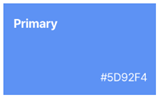
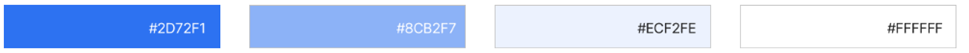
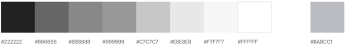
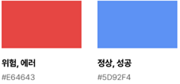
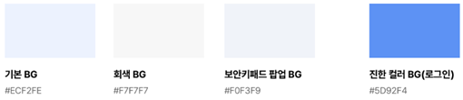

- Foundation
- Typography
- Iconography
- Colors
- Illustration
- Motion
- Validation
- Writing
Colors
- Definition
- 컬러는 기본색과 보조색으로 정의되어 있고, 이를 다양한 방식으로 UI에 적용한다.
- Primary Color
- 전용색상은 강조하고자 하는 정보를 하이라이트 하거나 Primary Action 요소에 주로 사용한다.
컬러를 적용할 때에는 한 화면에 너무 많은 요소에 사용하여 산만하게 보이지 않도록 주의해야 한다.

- Secondary Color

- Gray Scales Color
- Grayscale은 정보의 강약을 나타내고, 계층을 구분하는데 사용된다. 주로 텍스트, 배경, 콤포넌트 구성 요소에 사용한다.

- Status Color
- 정상, 에러, 위험 등 상태를 표시하는 요소에 사용한다.

- Background Color
